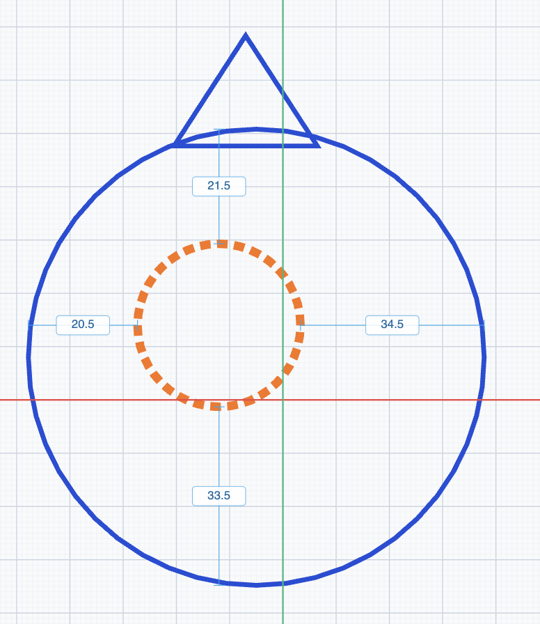

Norsk 3D-verktøy for skaperverkstedet
Tegn. Bygg. Print.
Akse er et 3D-modelleringsverktøy laget for barn og unge. Sett sammen grunnfigurer, tegn dine egne plantegninger i 2D — og eksporter modellen som STL-fil, klar for 3D-printeren.
- ✓ Rett i nettleseren
- ✓ Helt på norsk
- ✓ STL-eksport for 3D-print

01 / Hva er Akse?
3D-modellering som alle kan mestre
Akse betyr akse — som i X, Y og Z. Det er hele ideen: et verktøy der barn og unge lærer å tenke i tre dimensjoner, uten å drukne i avanserte menyer. Du bygger modeller ved å plassere og forme grunnfigurer — eller tegne ditt eget omriss — og alt måles i ekte millimeter, slik at det du ser på skjermen er det du holder i hånden etter printing.
Akse er laget av Skaperiet, et skaperverksted for barn og unge, og brukes i kurs og verksteder der veien fra idé til ferdig 3D-print skal være så kort som mulig. Alt kjører rett i nettleseren — ingenting å installere.
For barn og unge
Enkle verktøy, norske ord og store knapper. Designet for nysgjerrige hender — på både PC og nettbrett.
Ekte millimeter
Alle mål er i mm. Det barna tegner stemmer med det som kommer ut av 3D-printeren.
Klar for print
Ett klikk eksporterer hele prosjektet som STL-fil — formatet alle 3D-printere forstår.
02 / Slik fungerer det
Fra idé til 3D-print i tre steg
-
Bygg med figurer
Velg blant kube, sylinder, kule, kjegle, pyramide, kile og smultring — eller tegn ditt eget omriss med frihåndstegning, 3D-tekst og plantegning. Figurene lander rett på arbeidsplanet.
-
Form og kombinér
Flytt, rotér og skalér med millimeterpresisjon og smart snapping. Sett en figur til hull, så skjærer den seg gjennom de andre — perfekt for skruehull, vinduer og hemmelige rom.
-
Eksporter og print
Trykk på STL-knappen og hele modellen lastes ned som én utskriftsklar fil. Du kan også importere STL-filer andre har laget, og bygge videre på dem.
03 / Skisseverktøyet
Plantegning: tegn i 2D, få 3D
Det kraftigste verktøyet i Akse er Plantegning — et eget skissebrett der du tegner formen ovenfra på millimeterpapir, og løfter den opp til en 3D-modell med ett klikk.


-
Sju tegneverktøy
Rektangel, avrundet rektangel, sirkel, ellipse, trekant og polygon — alle med egne hurtigtaster, slik at hendene lærer verktøyet.
-
Solid eller hull
Hver figur kan være solid (blå) eller hull (oransje, stiplet). Hullene klippes ut av modellen — slik lager du for eksempel en nøkkelring på under et minutt.
-
Grupper med avstandsguider
Grupper figurer, så vises avstanden mellom dem som redigerbare mål — skriv inn eksakte tall, og figurene holder seg sammen når du flytter og skalerer.
-
Lag 3D-modell
Velg 3D-høyde i millimeter og trykk «Lag 3D-modell». Forhåndsvisningen viser resultatet før du bestemmer deg — og du kan alltid gå tilbake og redigere skissen.
04 / Byggeklossene
Sju grunnfigurer. Uendelige muligheter.
Alt i Akse starter med enkle figurer. Kombinér dem som solide klosser eller hull, så vokser de til romskip, smykker, navneskilt og reservedeler. Hver figur har sin egen tast på tastaturet.
-
Kube
K -
Sylinder
S -
Kule
U -
Kjegle
J -
Pyramide
P -
Kile
I -
Smultring
M -
…og 3D-tekst, frihåndstegning og STL-import
05 / Funksjoner
Lite verktøy. Store muligheter.
-
📐 Millimeterpresisjon
Flytt med snapping på 0,1 / 0,5 / 1 / 10 mm, og rotér med snapping på 1° / 22,5° / 45° / 90°. Mål vises direkte på modellen og kan redigeres med tastaturet.
-
🕳️ Boolske hull
Alle figurer kan settes til «hull»-modus og skjæres ut av modellen. Skruehull, brevsprekker og kikkehull — uten avansert CAD.
-
💾 Lagre der du vil
Lagre prosjekter i skyen med Skaperiet-konto, eller som fil på egen maskin. Prosjektene er små JSON-filer som er enkle å dele.
-
↩️ Trygt å prøve og feile
Full angre- og gjør om-historikk (Ctrl+Z / Ctrl+Shift+Z), kopier og lim inn, og dupliser med Ctrl+D for å lage mønstre.
-
🎨 Farger og tema
Åtte friske farger til figurene, og både lyst og mørkt tema i editoren — for sene kvelder på skaperverkstedet.
-
👆 Mus eller berøring
Full støtte for mus med håndtak og hurtigtaster — og et forenklet berøringsoppsett som fungerer fint på nettbrett.
Klar til å bygge noe?
Akse er gratis og kjører rett i nettleseren. Start med en kube — se hvor det ender.
Åpne Akse-editorenFungerer i alle moderne nettlesere · Ingen installasjon